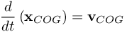
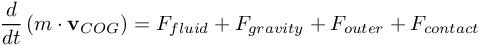
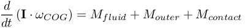
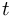
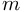
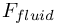
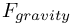
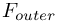
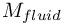
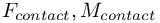

Simulate with complex geometries and complex physics
RIGIDBODY
rigid body movement (translation and rotation) due to acting forces of the flow
The geometry with MOVE-flag $MOVE_index$ moves due to the acting forces of the flow as well as
additional outer forces and momentum.
In particular, we solve the ODE of movement of rigid rotating bodies:



The variables are
-  : time
-  : mass of the body,
- : position of the center of gravity of the body ; this can be interrogated by the function xCOG() ,
- : velocity of the center of gravity; this can be interrogated by the function vCOG() ,
-  : forces acting from the fluid onto the body (automatically measured and applied!!!), to be requested by the function FCOG() ,
- : the gravity forces deduced from the definition of gravity of the appropriate material ,
-  : additional / outer forces other than fluid or gravity / body forces ,
- : tensor of rotational inertia ,
- : rotational speed about the center of gravity of the body, to be requested by the function omCOG() ,
-  : moment about the center of gravity (automatically measured and applied!!!!), this can be inquired by the function MCOG() ,
- : outer moments other than the moment applied by the fluid ,
-  : if RIGIDBODY_UseCollisionModel = true , then MESHFREE detects the body-body- and body-boundary-intersections and automatically applies contact forces and moments .
MOVE($MOVE_index$) = ( %MOVE_rigid%,
xCenterInit, yCenterInit, zCenterInit,
Mass,
xxInertia, xyInertia, xzInertia, yxInertia, yyInertia, yzInertia, zxInertia, zyInertia, zzInertia,
xVelocityInit, yVelocityInit, zVelocityInit,
xOmegaInit, yOmegaInit, zOmegaInit,
xForce, yForce, zForce,
xMomentum, yMomentum, zMomentum,
OPTIONAL:xxdFduInit, xydFduInit, xzdFduInit, yxdFduInit, yydFduInit, yzdFduInit, zxdFduInit, zydFduInit, zzdFduInit ,
OPTIONAL:xxdGdOmega, xydGdOmega, xzdGdOmega, yxdGdOmega, yydGdOmega, yzdGdOmega, zxdGdOmega, zydGdOmega, zzdGdOmega )
- (xCenterInit, yCenterInit, zCenterInit): initial center of gravity
- Mass: mass of rigid body
- (xxInertia, xyInertia, xzInertia, yxInertia, yyInertia, yzInertia, zxInertia, zyInertia, zzInertia): initial tensor of inertia
- (xVelocityInit, yVelocityInit, zVelocityInit): initial velocity
- (xOmegaInit, yOmegaInit, zOmegaInit): inital rotational state
- (xForce, yForce, zForce): outer forces
- (xMomentum, yMomentum, zMomentum): outer momentum
- ( xxdFduInit, xydFduInit, xzdFduInit, yxdFduInit, yydFduInit, yzdFduInit, zxdFduInit, zydFduInit, zzdFduInit ): initial guess of dF/du (tensor)
- ( xxdGdOmega, xydGdOmega, xzdGdOmega, yxdGdOmega, yydGdOmega, yzdGdOmega, zxdGdOmega, zydGdOmega, zzdGdOmega ): initial guess of dG/dOmega (tensor)